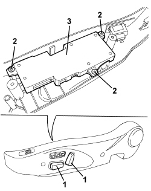

7045J36 SEAT MOVEMENT ECU R R FOLLOWING ELECTRICAL CIRCUIT CHECK
- Path
- Procedures > 70 FITTINGS > 7045 FRONT SEATS > 7045J FRONT SEAT ELECTRIC MOVEMENTS > 7045J36 SEAT MOVEMENT ECU R R FOLLOWING ELECTRICAL CIRCUIT CHECK
- Kind
- repair procedure (removal / refitting; the operation number is the code)
- Applies to
- all engines; all production periods; only with equipment: Electric seats
- Interactive page
- https://sloeber94.github.io/elrnDB/#/939005564
Applies to: all engines; all production periods; only with equipment: Electric seats
 Removing
Removing
 Refitting
RefittingOp. 7045A43 FRONT SEAT EXTERIOR GUARD (ONE), LEFT OR RIGHT - R.R
1. Remove the handles, undoing the internal retainers.
2. Loosen the control unit retaining bolts.
3. Remove the control unit with the seat adjustment controls.

Applies to: all engines; all production periods; only with equipment: Electric seats
Refitting
Removing- Check that the control unit with seat adjustment controls is not damaged.
- Position the control unit and tighten the fixing bolts.
- Place the knobs in position and attach the inner retainers.
Op. 7045A43 FRONT SEAT EXTERIOR GUARD (ONE), LEFT OR RIGHT - R.R
Topics linked from this page (1)
Topics that link to this page (7)
- O001 FRONT SEAT SLIDING NOT WORKING
- O002 FRONT SEAT BACKREST ANGLE ADJUSTMENT NOT WORKING
- O003 FRONT SEAT ADJUSTMENTS (ALL) NOT WORKING
- O005 FRONT SEAT HEIGHT ADJUSTMENT NOT WORKING
- 7045J10 SWITCH UNIT FOR MOVEMENT OF ONE FRONT SEAT, L/H OR R/H - R+R FOR CHECK
- E3076 ELECTRICALLY ADJUSTABLE SEATS - WIRING DIAGRAM
- E3076 ELECTRICALLY ADJUSTABLE SEATS - COMPONENT LOCATION